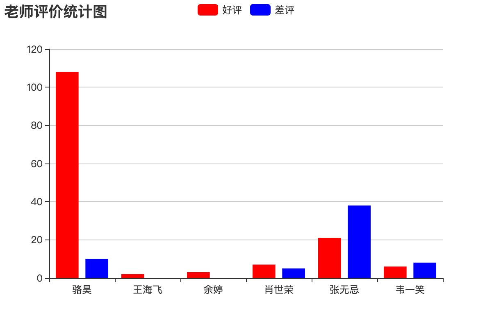

制作报表
导出Excel报表
报表就是用表格、图表等格式来动态显示数据，所以有人用这样的公式来描述报表：
报表 = 多样的格式 + 动态的数据
有很多的三方库支持在Python程序中写Excel文件，包括xlwt、xlwings、openpyxl、xlswriter等，其中的xlwt虽然只支持写xls格式的Excel文件，但在性能方面的表现还是不错的。下面我们就以xlwt为例，来演示如何在Django项目中导出Excel报表。
安装xlwt。
pip install xlwt
导出包含所有老师信息的Excel表格的视图函数。
def export_teachers_excel(request):
# 创建工作簿
wb = xlwt.Workbook()
# 添加工作表
sheet = wb.add_sheet('老师信息表')
# 查询所有老师的信息
queryset = Teacher.objects.all()
# 向Excel表单中写入表头
colnames = ('姓名', '介绍', '好评数', '差评数', '学科')
for index, name in enumerate(colnames):
sheet.write(0, index, name)
# 向单元格中写入老师的数据
props = ('name', 'detail', 'good_count', 'bad_count', 'subject')
for row, teacher in enumerate(queryset):
for col, prop in enumerate(props):
value = getattr(teacher, prop, '')
if isinstance(value, Subject):
value = value.name
sheet.write(row + 1, col, value)
# 保存Excel
buffer = BytesIO()
wb.save(buffer)
# 将二进制数据写入响应的消息体中并设置MIME类型
resp = HttpResponse(buffer.getvalue(), content_type='application/vnd.ms-excel')
# 中文文件名需要处理成百分号编码
filename = quote('老师.xls')
# 通过响应头告知浏览器下载该文件以及对应的文件名
resp['content-disposition'] = f'attachment; filename*=utf-8\'\'{filename}'
return resp
映射URL。
urlpatterns = [
path('excel/', views.export_teachers_excel),
]
导出PDF报表
在Django项目中，如果需要导出PDF报表，可以借助三方库reportlab来生成PDF文件的内容，再将文件的二进制数据输出给浏览器并指定MIME类型为application/pdf，具体的代码如下所示。
def export_pdf(request: HttpRequest) -> HttpResponse:
buffer = io.BytesIO()
pdf = canvas.Canvas(buffer)
pdf.setFont("Helvetica", 80)
pdf.setFillColorRGB(0.2, 0.5, 0.3)
pdf.drawString(100, 550, 'hello, world!')
pdf.showPage()
pdf.save()
resp = HttpResponse(buffer.getvalue(), content_type='application/pdf')
resp['content-disposition'] = 'inline; filename="demo.pdf"'
return resp
关于如何用reportlab定制PDF报表的内容，可以参考reportlab的官方文档。
生成前端统计图表
如果项目中需要生成前端统计图表，可以使用百度的ECharts。具体的做法是后端通过提供数据接口返回统计图表所需的数据，前端使用ECharts来渲染出柱状图、折线图、饼图、散点图等图表。例如我们要生成一个统计所有老师好评数和差评数的报表，可以按照下面的方式来做。
def get_teachers_data(request):
queryset = Teacher.objects.all()
names = [teacher.name for teacher in queryset]
good_counts = [teacher.good_count for teacher in queryset]
bad_counts = [teacher.bad_count for teacher in queryset]
return JsonResponse({'names': names, 'good': good_counts, 'bad': bad_counts})
映射URL。
urlpatterns = [
path('teachers_data/', views.get_teachers_data),
]
使用ECharts生成柱状图。
<!DOCTYPE html>
<html lang="en">
<head>
<meta charset="UTF-8">
<title>老师评价统计</title>
</head>
<body>
<div id="main" style="width: 600px; height: 400px"></div>
<p>
<a href="/">返回首页</a>
</p>
<script src="https://cdn.bootcss.com/echarts/4.2.1-rc1/echarts.min.js"></script>
<script>
var myChart = echarts.init(document.querySelector('#main'))
fetch('/teachers_data/')
.then(resp => resp.json())
.then(json => {
var option = {
color: ['#f00', '#00f'],
title: {
text: '老师评价统计图'
},
tooltip: {},
legend: {
data:['好评', '差评']
},
xAxis: {
data: json.names
},
yAxis: {},
series: [
{
name: '好评',
type: 'bar',
data: json.good
},
{
name: '差评',
type: 'bar',
data: json.bad
}
]
}
myChart.setOption(option)
})
</script>
</body>
</html>
运行效果如下图所示。
